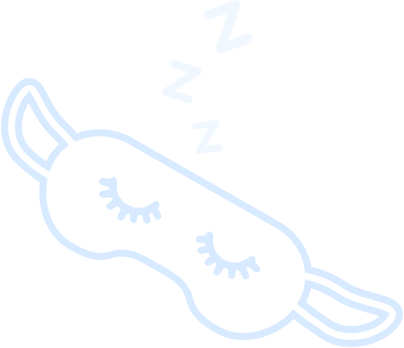
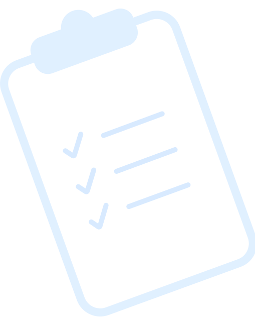
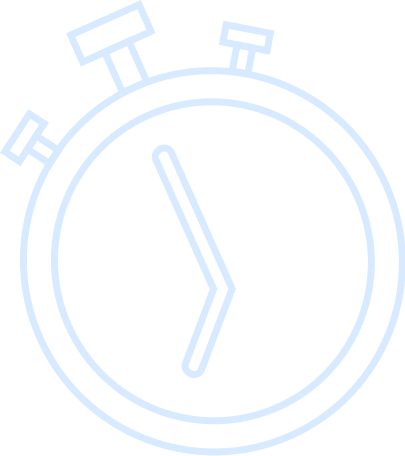

ФИКСИМ
ПРОДУКТИВНОСТЬ
Приближается сессия, список дедлайнов растёт, но ты очень устал и потерял мотивацию? На основе частых ошибок первокурсников школы тайм-менеджмента мы подобрали пару несложных техник, которые помогут быстро собраться и вернуть силы. Какая-то из них обязательно поможет!
прокрути внизПИТАЙСЯ
ПРАВИЛЬНО
От сбалансированного рациона заметно улучшается самочувствие, увеличивается мозговая активность и уходит хроническая усталость. Вовсе не значит, что нужно морить себя голодом! Просто старайся питаться регулярно и качественно.

ИЗБЕГАЙ
НЕДОСЫПА
Если чувствуешь, как глаза сами закрываются — заведи будильник на 10-15 минут, выключи свет и попробуй подремать. За такое время ты успеешь немного взбодриться, при этом не погружаясь в фазу глубокого сна. Для некоторых этот метод может стать заменой бодрящих напитков.
СОСТАВЬ
СПИСОК ЦЕЛЕЙ
Составив список задач на конкретный срок (например, на 6 часов или сутки), легче распределять нагрузки и избегать прокрастинации. Ты сразу почувствуешь разницу!
ИСПОЛЬЗУЙ
ПРАВИЛО ПЯТИ СЕКУНД
Как только чувствуешь, что начинаешь прокрастинировать — отсчитай в голове пять секунд, после чего возвращайся к делам. Этот несложный приём помогает быстро привести мысли в порядок и быстро переключиться на работу.
ГОТОВЬСЯ
К БИТВЕ ЗАРАНЕЕ
Придумай небольшой ритуал, который ты будешь повторять перед работой: например, можно отключить уведомления на всех устройствах и убрать всё лишнее со стола.

ПРОЙДИ КУРС
«ПЕРЕЗАГРУЗКА»
Ещё больше техник, лайфхаков и крутых практик в новом курсе от школы тайм-менеджмента! Пройди тестирование, и мы подберём тебе персональную программу очных и заочных занятий.